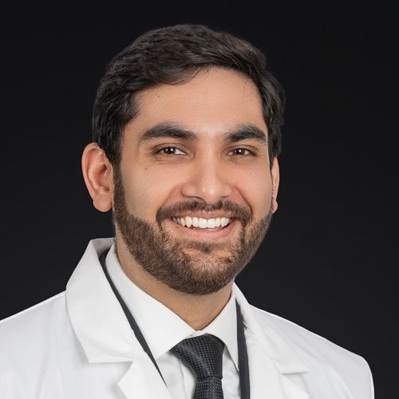
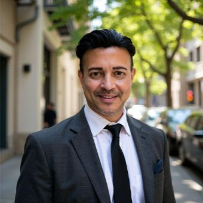

Dentista de emergencia en Manhasset
Encontramos la causa de su dolor.
¿Dolor fuerte de muelas, un diente partido o hinchazón? No espere.
Estacionamiento gratis·Reseñas en Google
Qué incluye su visita
- Radiografía panorámica + tomografía 3D (CBCT)
- Diagnóstico y plan de tratamiento
- Receta enviada a su farmacia
Dónde estamos
444 Community Drive, Suite 309Manhasset, NY 11030Atendemos a pacientes de Queens, Nassau y SuffolkJunto a la salida 33 de la autopista L.I.E.Estacionamiento gratis
Cómo llegar →● Por qué elegirnos ●
Del dolor a la solución, en una sola visita.
Diagnóstico, radiografía panorámica, tomografía 3D (CBCT) y tratamiento, todo en un mismo lugar: extracciones de emergencia, tratamientos de conducto de emergencia y dolor de muelas del juicio. La primera clínica Urgent Care DentalSM del país.
Examen + imágenes
Una sola tarifa fija cubre el examen, la radiografía panorámica y la tomografía 3D (CBCT)
Aquí mismo
Cirujanos orales y laboratorio dental en el consultorio
● Síntomas comunes ●
¿Qué está sintiendo?
Todo empieza con algo pequeño. Una molestia que casi ni se nota. Sensibilidad al frío. Una grieta que no se ve. Cuando por fin duele, el problema ya es más profundo de lo que se ve. Todo eso lo tratamos el mismo día:
-
Urgente
Dolor de muelas fuerte
Si es un dolor profundo y punzante que no lo deja dormir, lo más probable es que el nervio esté afectado.
-
Urgente
Hinchazón y absceso en la cara
Si se le hinchó la cara, la infección se está extendiendo más allá del diente. Esto no puede esperar.
-
Urgente
Infección dental
Presión, mal sabor en la boca o un granito en la encía son señales de una infección activa.
-
Urgente
Diente que se salió por un golpe
Un diente que se salió por completo muchas veces se puede salvar si llega rápido.
-
Urgente
Diente flojo o fuera de lugar
Si un diente se movió de su lugar o se siente flojo, hay que estabilizarlo pronto.
-
Diente partido o astillado
Un diente rajado o partido deja expuestas las capas internas y empeora cada vez que muerde.
-
Se le cayó o aflojó un relleno, corona o puente
Si un relleno, una corona o un puente se cayó o está flojo, el diente queda expuesto a las bacterias y a la presión.
-
Emergencia con un implante
Un implante flojo, que duele o que está fallando necesita que lo revise un cirujano, no una lista de espera.
-
Sensibilidad extrema
Un dolor agudo con lo frío, lo caliente o el aire indica que la capa interna del diente está expuesta o que hay una grieta escondida.
-
Dolor de muelas del juicio
Presión al fondo de la mandíbula, hinchazón o dificultad para abrir la boca.
-
Dentadura postiza rota
¿Se agrietó, se partió o se le cayó un diente? No la pegue en casa. Traiga todas las piezas y revisamos si se puede reparar. Reparación de dentaduras (inglés) →
-
Cualquier otra emergencia
¿No sabe qué tiene? No necesita un diagnóstico para que lo atendamos.
● Antes de llegar ●
Qué hacer ahora mismo.
Los primeros minutos pueden decidir si un diente se salva y cuánto empeora el dolor. Esto es lo que puede hacer mientras viene hacia acá.
Dolor de muelas fuerte
Un dolor punzante casi siempre significa que el nervio está afectado. Estos pasos alivian mientras llega a la consulta.
- Enjuáguese con agua tibia y sal (media cucharadita en un vaso de agua).
- Pase el hilo dental con cuidado alrededor del diente por si hay comida atrapada.
- Tome un analgésico de venta libre según las indicaciones del empaque.
- Póngase una compresa fría por fuera de la mejilla, 20 minutos sí y 20 no.
- Llame al (516) 500-7400 para que lo atendamos.
Nunca ponga una aspirina directamente sobre la encía. Quema el tejido.
Diente que se salió por un golpe
Un diente permanente que se sale muchas veces se puede salvar, pero la primera hora es la más importante.
- Tómelo por la corona (la parte blanca), nunca por la raíz.
- Si está sucio, enjuáguelo unos segundos. No lo frote ni lo seque.
- Si puede, vuelva a colocarlo en su lugar y muerda suavemente una gasa limpia.
- Si no puede, guárdelo en un vaso pequeño con leche, no con agua.
- Llame al (516) 500-7400 y venga de inmediato.
Diente roto o astillado
Una fractura deja expuesto el interior del diente, así que se vuelve más sensible y se puede infectar.
- Enjuáguese la boca suavemente con agua tibia.
- Guarde los pedazos que encuentre en un poco de leche.
- Use una compresa fría en la mejilla para bajar la hinchazón.
- Cubra los bordes filosos con cera dental o chicle sin azúcar.
- Mastique del otro lado y llame al (516) 500-7400.
Hinchazón o absceso
La hinchazón significa que la infección se está extendiendo más allá del diente. No se quita sola.
- No apriete, reviente ni drene un bulto en la encía.
- Enjuáguese con agua tibia y sal varias veces al día.
- Use una compresa fría por fuera de la cara. No use calor.
- Llame al (516) 500-7400 de inmediato.
Vaya a la sala de emergencias o llame al 911 si le cuesta respirar o tragar, si la hinchazón llega al ojo o baja por el cuello, o si tiene fiebre alta.
● Por qué duele ●
El dolor no avisa.
Un diente rajado, un relleno que se cayó, un dolor que no se quita. Los problemas pequeños casi nunca se quedan pequeños. Las pastillas para el dolor le dan unas horas de alivio, pero no arreglan lo que está pasando por dentro.
Al atenderlo el mismo día, encontramos la causa real y la tratamos, para que no tenga que esperar hasta el lunes sin saber qué tiene.
● No espere ●
Mientras más espera, peor se pone.
La hinchazón, un dolor que se extiende o la fiebre no son cosas que se puedan dejar para mañana. Si no se atiende, un problema pequeño puede volverse uno mucho más grande y más caro.
Para eso estamos: dentistas de emergencia y cirujanos orales aquí mismo.
● Reseñas de pacientes ●
Lo que dicen nuestros pacientes.
De nuestras reseñas en Google, escritas en su mayoría por personas que llegaron con dolor. Traducidas del inglés.
Tuve una emergencia. Me dolía muchísimo el diente y pedí una revisión de emergencia. Todos hicieron un trabajo increíble, fue fácil y rápido, todo lo que podía pedir, y tampoco es difícil sacar una cita. Muchas gracias al Dr. Daniel y al personal. Todos son amables y es fácil hablar con ellos. Sin duda volveré si me vuelve a pasar algo.
Traje a mi hijo por una emergencia un fin de semana. Un personal encantador y el doctor Arzanipour, increíble. Casi no tuvimos que esperar y el lugar está limpio. Lo recomiendo mucho.
Tuve una emergencia dental durante un viaje de trabajo y pudieron atender todo lo que necesitaba. De verdad agradezco todo lo que hacen ahí.
Solo tengo cosas buenas que decir de mi experiencia de hoy. Para mí era muy importante que el doctor y el personal entendieran lo nerviosa que llegué. Le tengo mucho miedo al dentista por malas experiencias en otros lugares. ¡El Dr. Daniel Arzanipour fue increíble! Delicado, atento, y me fue explicando cada paso de lo que estaba haciendo. ¡Un trato excelente!
Su asistente, Joseline, también fue muy amable y me hizo sentir cómoda de principio a fin.
Muchísimas gracias a todos hoy, porque hicieron que mis miedos desaparecieran mientras estaba sentada aquí. ¡Mil gracias!
¡Wow! ¿Quién hubiera pensado que un procedimiento dental podía ser tan... AGRADABLE? ¿Tan fácil? ¿Tan delicado? ¿Tan claros con los precios? Smile Services fue todo eso. No podría estar más contenta con la experiencia.
● Pagos y financiamiento ●
Atiéndase hoy, pague a plazos.
Ofrecemos financiamiento al 0% para todo tipo de crédito, para que el dinero nunca sea la razón para esperar en una emergencia.
Financieras que aceptamos
● Qué esperar ●
Tres pasos hacia el alivio.
Llame o reserve en línea
Díganos qué le duele. Le decimos cuándo venir; muchas veces, de inmediato.
Lo evaluamos
La mayoría de los pacientes son atendidos en 60 minutos o menos. El examen, la radiografía panorámica y la tomografía 3D (CBCT) se hacen aquí mismo.
Salga con un plan
Sabrá qué tiene, qué se necesita para arreglarlo, y saldrá sin dolor.
● Nuestro equipo ●
Quiénes lo atienden.
Dentistas de emergencia y cirujanos orales aquí mismo. Lo evalúa y lo trata el mismo equipo, en la misma visita.

Headshot"">Dr. Joshua Stutman, DDS
Odontología general, restaurativa, de implantes y estética
Formado en hospitales de Northwell Health, donde fue elegido jefe de residentes en North Shore University Hospital y Long Island Jewish. Extracciones, tratamientos de conducto y restauración de implantes.

Headshot"">Dr. Amit Dhar, DDS
Odontología general, restaurativa, de implantes y estética
Más de 25 años de experiencia clínica, con enfoque en un diagnóstico completo y una planificación precisa del tratamiento. Conocido por su trato tranquilo y centrado en el paciente, que hace que el tratamiento sea fácil de entender.
Dr. Daniel Arzanipour, DDS
Odontología general, restaurativa, de implantes y estética
Egresado de NYU College of Dentistry, con residencia de posgrado en los hospitales Bellevue y Gouverneur de Manhattan. También tiene una maestría en biología bioquímica, celular y molecular. Se enfoca en que cada paciente entienda su tratamiento y se sienta seguro.
Dr. Jesse C. Doscher, DDS, MSc, FACS, PC
Cirugía oral y maxilofacial
Certificado por la junta (board) en dos especialidades: cirugía oral y maxilofacial, y patología. Formación quirúrgica en Yale–New Haven Hospital; título de odontología de NYU. Cirujano de planta en St. Barnabas Hospital y nacido en Great Neck.
● Preguntas frecuentes ●
Lo que más nos preguntan.
¿Qué se considera una emergencia dental?
Un dolor de muelas fuerte, un diente que se salió o está flojo, un diente rajado o partido, hinchazón en la cara o en las encías, un sangrado que no para, o un relleno o una corona que se cayó y le está doliendo. Si le duele o algo se rompió, vale la pena que lo revisen.
¿Pueden atender una emergencia dental el mismo día?
Sí. Para eso existe este consultorio: para atender emergencias el mismo día. La mayoría de los pacientes son atendidos en aproximadamente una hora.
¿Qué hago si se me salió un diente por un golpe?
Agárrelo por la corona (la parte blanca que se ve), nunca por la raíz. Enjuáguelo con cuidado y, si puede, vuelva a ponerlo en su lugar dentro de la boca o guárdelo en un vaso de leche. Después venga de inmediato. Un diente que se salió tiene más posibilidades de salvarse durante la primera hora.
¿La hinchazón en la cara o en las encías es una emergencia dental?
Sí. La hinchazón en la mandíbula, la mejilla o el cuello puede ser señal de una infección o un absceso que se está extendiendo, y hay que tratarla pronto. Llámenos de inmediato.
Si me duele una muela, ¿voy a la sala de emergencias o al dentista?
Para un dolor de muelas, una infección o un diente partido, un dentista de emergencia puede tratar la causa real. En la sala de emergencias, por lo general, no pueden. Si tiene dificultad para respirar o tragar, o se dio un golpe en la cabeza, llame primero al 911.
¿Qué hace la sala de emergencias por un dolor de muelas?
Por lo general le dan medicamento para el dolor y a veces antibióticos, y luego lo refieren a un dentista. La mayoría de las salas de emergencias no tienen dentista, así que no pueden arreglar el diente. Vaya a la sala de emergencias si le cuesta respirar o tragar, si la hinchazón llega al ojo o al cuello, si sangra mucho o si tuvo un golpe en la mandíbula o la cabeza. Para todo lo demás, llámenos al (516) 500-7400.
¿Un dentista puede sacar un diente roto o con caries?
Sí. Cuando un diente no se puede salvar, se puede extraer, muchas veces en la misma visita de emergencia después de que las imágenes muestran las raíces. Los dientes rotos por debajo de la encía y las muelas del juicio impactadas los atienden cirujanos orales aquí mismo.
¿Qué hago si se me rompe la dentadura postiza?
No la pegue ni intente arreglarla en casa, porque eso puede hacer imposible la reparación. Traiga la dentadura y todas las piezas a su cita, y revisamos si se puede reparar o hay que reemplazarla. Más sobre reparación de dentaduras (inglés).
¿Cómo puedo calmar los nervios antes de una cita de emergencia?
Díganos que está nervioso cuando llame. Le explicamos cada paso antes de hacerlo, y la zona se adormece antes de empezar cualquier tratamiento. También ayuda venir acompañado, comer algo ligero antes y traer una lista de los medicamentos que toma.
● Visítenos ●
Junto a la salida 33 de la autopista L.I.E.
Fácil acceso desde Queens y los condados de Nassau y Suffolk. Estacionamiento gratis. Si tiene dolor ahora, llámenos en camino y le tendremos un consultorio listo.
Manhasset, NY 11030
Salida 33 del Long Island Expressway · Estacionamiento gratis
Cómo llegar

Reserve ReliefSM
No necesita un diagnóstico para que lo atendamos, solo un horario que le convenga. Reserve una cita para el mismo día y nosotros nos encargamos del resto: un examen de emergencia completo, con radiografía panorámica y tomografía 3D (CBCT) incluidas, y un plan claro para quitarle el dolor.
Reserve su cita
Reserve en menos de un minuto.
Elija el horario que mejor le convenga.